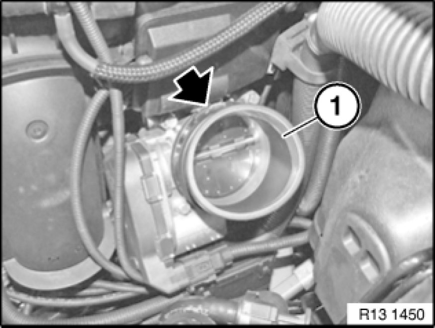

Removing and Installing/Replacing Intake Hose (On Throttle Valve Assembly) (N52K)
13 54 251 - Removing and installing/replacing intake hose (on throttle valve assembly) (N52K)

Necessary preliminary tasks:
- Remove intake hose Removing and Installing/Replacing Intake Hose (On Air Cleaner Housing) (N52K)

Unfasten clip.
Detach intake hose (1) from throttle valve assembly and remove.